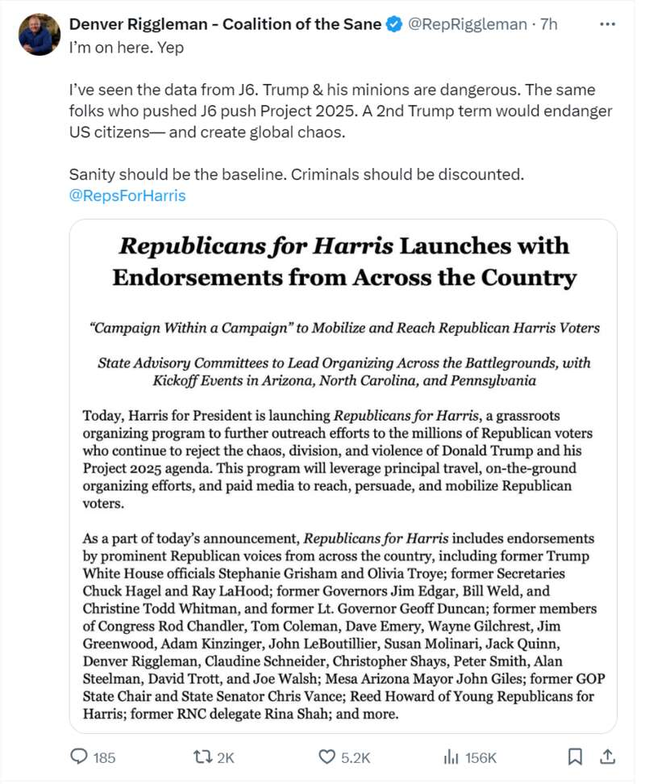

前弗吉尼亚州共和党众议员丹佛·里格尔曼（Denver Riggleman）上周日公开表态支持哈里斯，他警告称，让前总统特朗普重返白宫，将危及美国公民，并造成全球混乱。
此前，哈里斯竞选团队发起了“共和党支持哈里斯”（Republicans for Harris）倡议，而里格尔曼就加入了其中。
他在X上发帖称，“我在这里。是的。”附图是该倡议的一份新闻稿，包含了支持者的名单。

里格尔曼指出了2021年1月6日（简称“J6”）发生的事件，当时一群特朗普支持者袭击了美国国会大厦，解释了他支持上述倡议的原因。他在两次独立的竞选中都坚定支持特朗普，但在那年的1月6日与这位前总统“决裂”。
“我看过J6的数据。特朗普和他的死忠是危险的。推动J6的人也会推动‘2025计划’，”他说：“特朗普的第二个任期将危及美国公民，并造成全球混乱。”
“理智应该是底线，罪犯应该被排除在外，”他补充道。
自哈里斯的竞选团队发起了上述倡议以来，得到了超过25位知名共和党人的支持，其中包括前国防部长Chuck Hagel、前交通部长Ray LaHood和其他共和党议员和州长。
此外，特朗普时代的白宫新闻秘书Stephanie Grisham、前副总统彭斯的前国家安全顾问Olivia Troye也都支持哈里斯。
据悉，这些共和党人将向他们的朋友和家人讲述投票给副总统哈里斯的重要性，竞选团队称该组织是“竞选中的竞选”（campaign within a campaign）。该组织将于周一在亚利桑那州、北卡罗来纳州和宾夕法尼亚州的战场州举行启动活动。
“唐纳德·特朗普的‘让美国再次伟大’（MAGA）极端主义，对数百万共和党人来说是有毒的。他们不再相信特朗普的政党代表他们的价值观，并将在11月再次投票反对他，”哈里斯的共和党全国外联主任Austin Weatherford在一份声明中说。
Advertisements